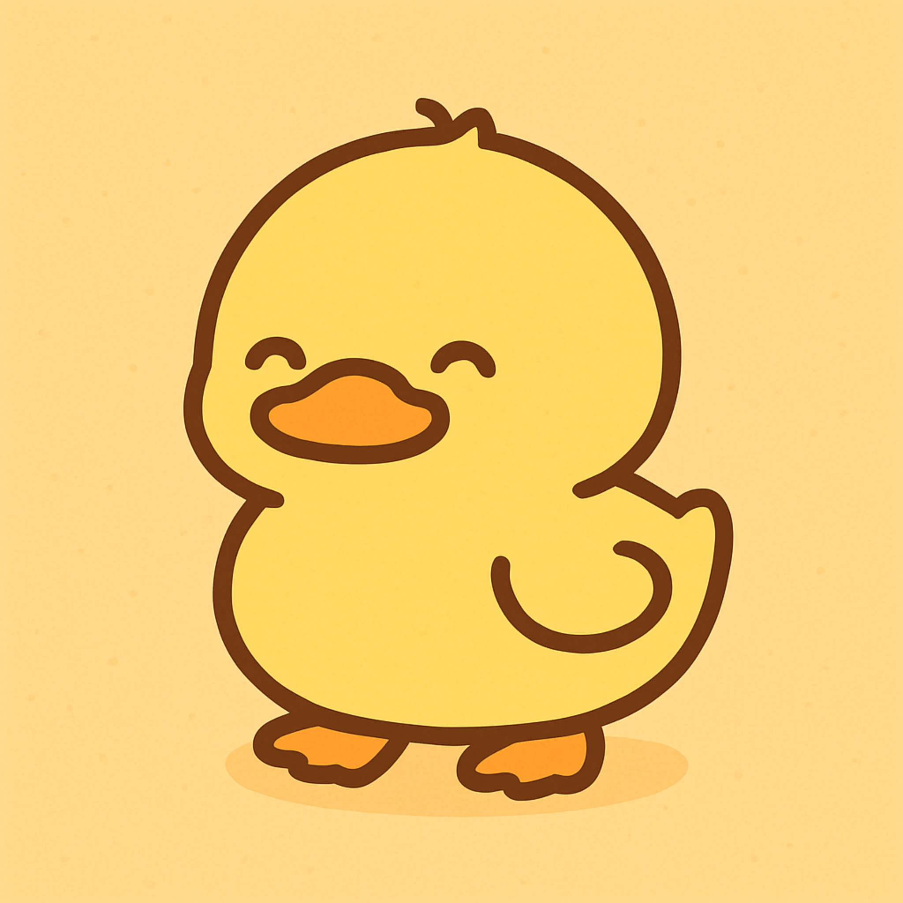
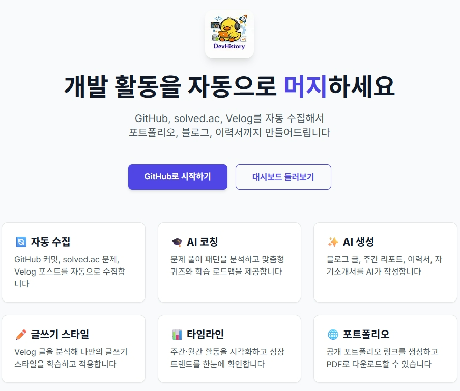
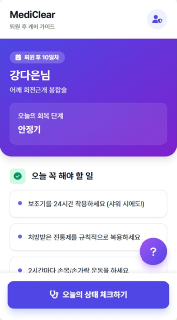
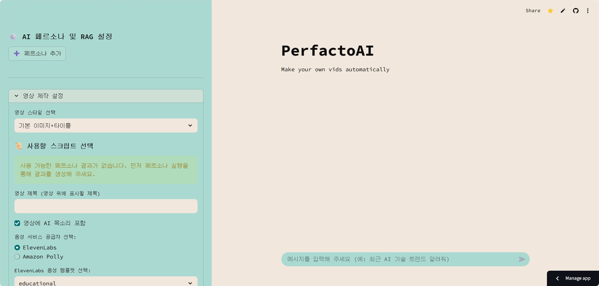
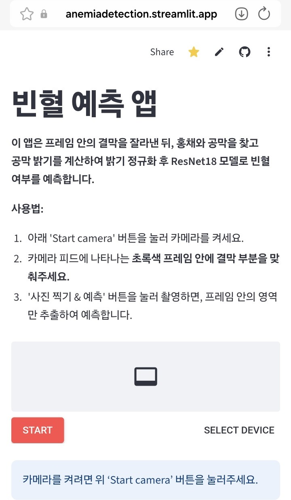
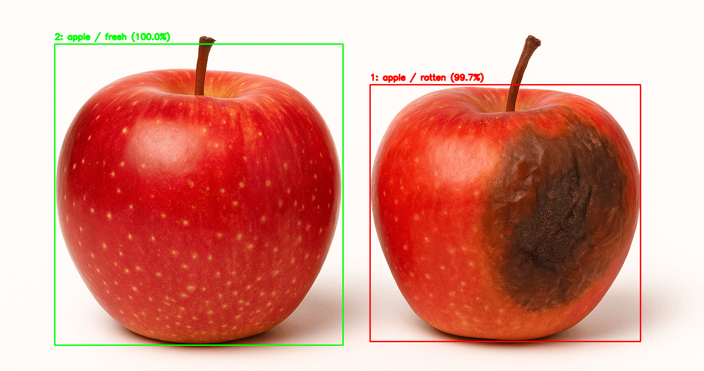
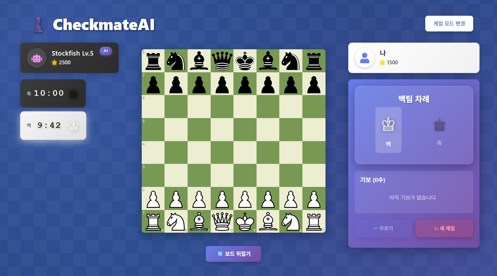

End-to-End Builder
아이디어만 말하는 쪽이 아니라 직접 만드는 쪽입니다. 데이터 정리, API 구현, 자동화, 화면 연결까지 끊기지 않게 이어서 결과물로 만듭니다.
연세대학교 미래캠퍼스 소프트웨어학부 수료생 한성주입니다. Python을 중심으로 AI, 데이터 처리, 백엔드 자동화를 직접 만들며 성장하고 있습니다. FastAPI, PostgreSQL, Docker, RAG, 컴퓨터비전을 프로젝트에 연결해 아이디어를 실제 결과물로 바꾸는 과정을 좋아합니다. 만든 것은 GitHub와 Velog에 남기고, 다음 버전에서 더 나아지도록 다시 다듬습니다.

배우는 데서 끝내지 않고, 직접 만들고 개선합니다.
아이디어만 말하는 쪽이 아니라 직접 만드는 쪽입니다. 데이터 정리, API 구현, 자동화, 화면 연결까지 끊기지 않게 이어서 결과물로 만듭니다.
화려한 말보다 실제로 돌아가는 구조를 선호합니다. 기능이 비어 있으면 메우고, 흐름이 끊기면 고치고, 끝까지 손봐서 완성도를 올립니다.
GitHub, Velog, 포트폴리오에 만든 것과 배운 것을 남깁니다. 만들고 끝내지 않고, 다시 설명할 수 있게 정리한 뒤 다음 버전에 반영합니다.
지금의 저를 가장 잘 보여주는 프로젝트들입니다.

GitHub, Velog, solved.ac에 흩어진 개발 활동을 자동 수집하고 정규화해 주간 리포트와 포트폴리오 페이지로 재가공하는 개인 기록 자동화 플랫폼입니다.

EMR 입력을 기준으로 퇴원 후 14일 관리 레이어를 자동화한 의료 운영 시스템입니다. 템플릿, 검색·요약, 알림, 설문, 위험신호, 대시보드를 하나의 흐름으로 묶었습니다.

스크립트 문장 기준으로 컷을 나누고 이미지·음성·자막을 합성해 쇼츠 영상을 자동 생성했습니다. 이후 CPR로 확장하며 운영형 배포·버전·동의·열람 로그까지 설계했습니다.

결막 이미지를 이용한 빈혈 판별 프로젝트로, 실제 촬영 환경의 조명 편차를 다루는 전처리에 집중했습니다.

객체 탐지와 분류를 분리한 2-stage 파이프라인으로 과일 신선도를 판별한 컴퓨터비전 프로젝트입니다.

체스 퍼즐 풀이와 AI 분석 경험을 하나로 묶은 학습형 프로젝트입니다. 외부 체스 엔진을 서비스 흐름에 연결하고, 사용자가 분석 결과를 직관적으로 확인할 수 있는 구조를 만드는 데 집중했습니다.
짧은 기간 안에 문제를 정의하고, 빠르게 구현해 결과를 만든 작업들입니다.
Bug, Tangent Bug, APF, PRM, RRT, Belief 등 7가지 경로계획 알고리즘을 게임처럼 비교할 수 있게 만든 교육용 시뮬레이션입니다. 복잡한 로직을 눈으로 확인하고 설명하는 힘을 길렀습니다.
K리그 이벤트 원시 데이터를 전처리해 xG/xT 흐름을 분석하고 XGBoost 기반 예측 모델을 만든 프로젝트입니다. DACON K리그-서울시립대 공개 AI 경진대회에서 15등(장려상)을 기록했습니다.
12가지 피싱 패턴을 규칙화하고 TF-IDF 기반 scoring과 기여 키워드 설명으로 브라우저 단 XAI 탐지 경험을 구현했습니다. DACON 피싱·스캠 예방 대회 예선 45위를 기록했습니다.
위에서 아래로, 시도와 결과가 이어진 순서입니다.
GitHub, Velog, DevHistory를 통해 문제정의·접근·결과·회고를 남기며 성장의 흔적을 지속적으로 쌓고 있습니다.
MediClear v1을 기획하며 의료 안내문 자동화 아이디어를 만들었고, 이후 MediBridge로 발전시켰습니다.
PerfactoAI를 자동화 툴이 아니라 운영형 SaaS 모델로 확장할 수 있는 방향성을 제시했습니다.
엣지 케이스 디버깅과 알고리즘 검증에 집중하며, 생성형 도구를 쓰더라도 최종 검증은 직접 하는 습관을 증명했습니다.
752팀 중 Private 49위를 기록하며 의료 AI 문제를 데이터 관점에서 끈질기게 풀어냈습니다.
MediBridge 자동화 아키텍처를 기반으로 의료 운영 프로세스를 구조화해 제안했습니다.
K-MOMENTO AI로 정형 데이터를 전처리하고 xG/xT 흐름 분석 및 예측 모델링을 수행했습니다.
PhishShield에서 12개 피싱 패턴을 규칙화하고 TF-IDF 기반 설명 가능한 탐지 로직을 구현했습니다.